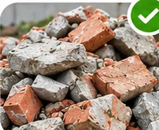
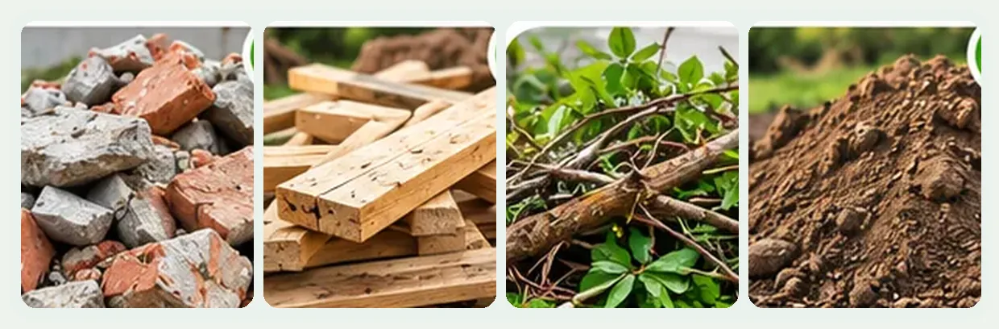
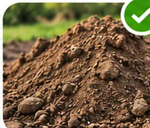
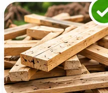
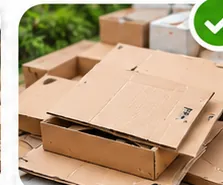
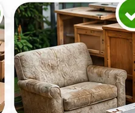
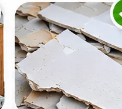
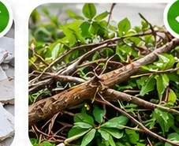
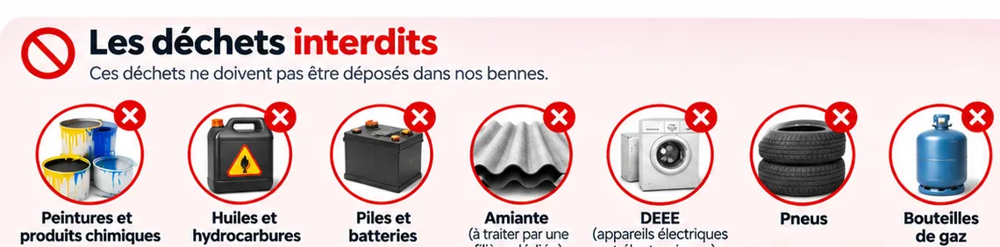
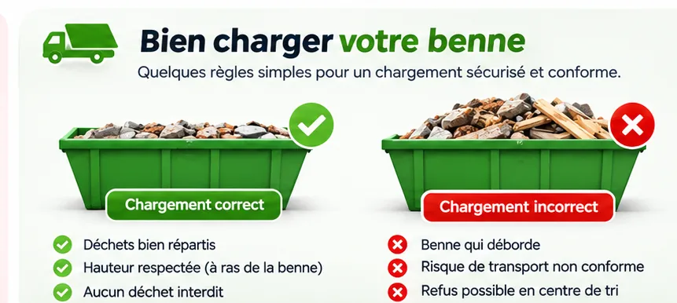

Gravats
Béton, briques, tuiles, carrelage
Préparez vos travaux en identifiant vos déchets. L’acceptation de chaque matériau dépend de l’offre choisie.

Les exemples ci-dessous ne remplacent pas les conditions de votre offre : vérifiez les déchets autorisés avant de réserver.

Béton, briques, tuiles, carrelage

Terre issue de travaux, pierres et cailloux

Planches, palettes, éléments de mobilier

Cartons, films et emballages plastiques

Meubles et objets issus d’un débarras

Plaques de plâtre et chutes d’isolants

Branches, tailles et végétaux


Tri des déchets — animation vectorielle
Chargement conforme — animation vectorielle
Si les animations ne s’affichent pas en ouvrant le fichier directement, utilisez un serveur local (ex. : python -m http.server 8000 dans le dossier du pack) et une connexion Internet pour le lecteur CDN.